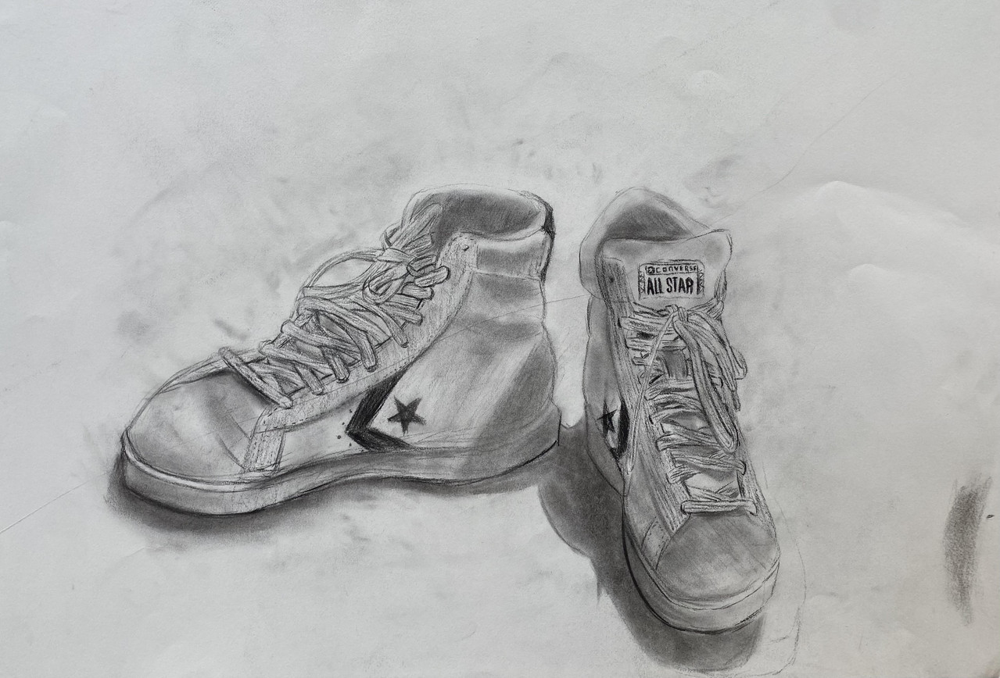
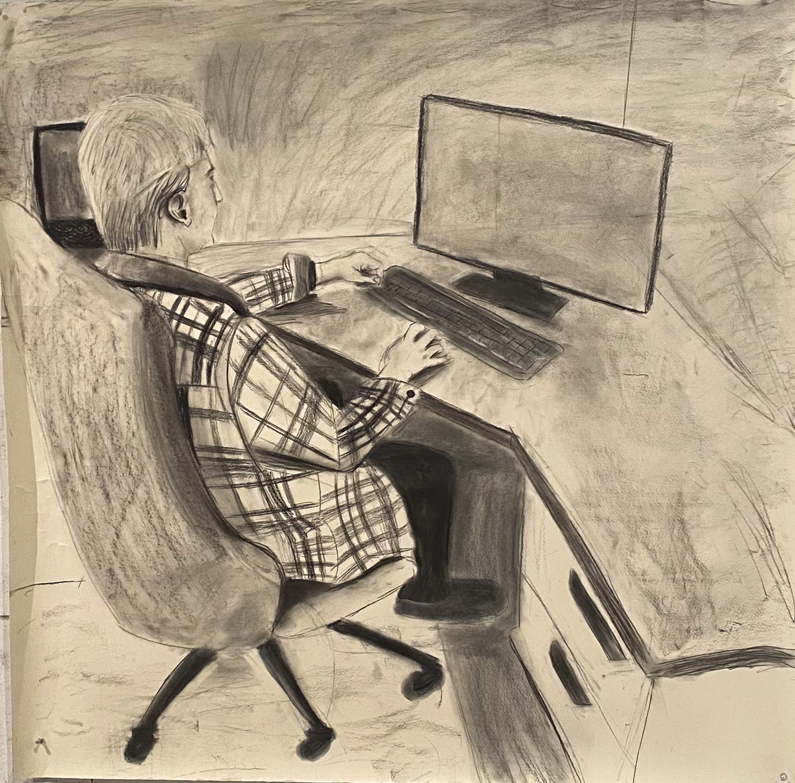
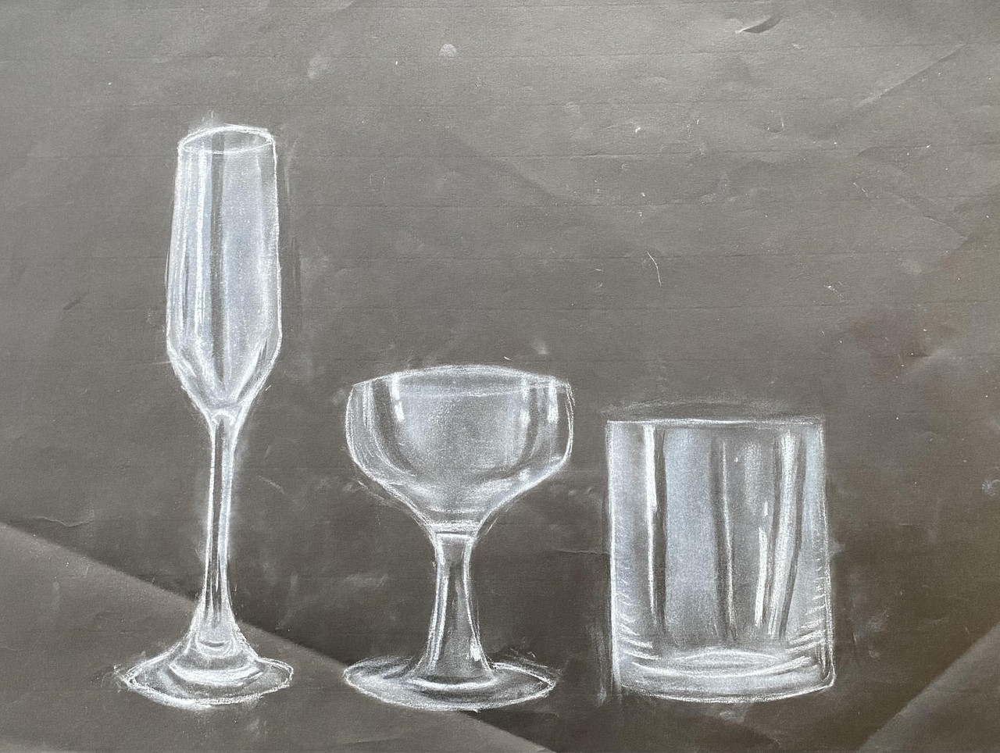
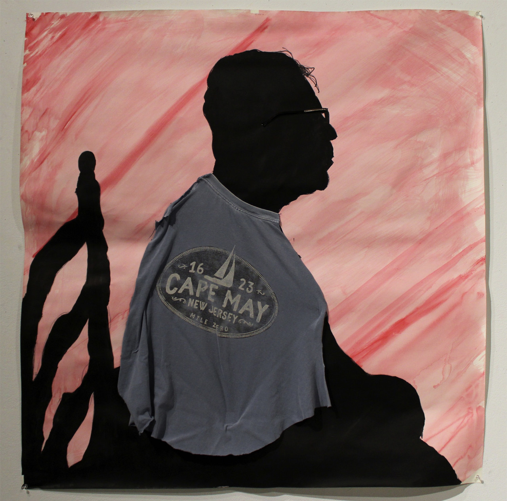

This is a painting I did in 2022. It is oil paint on a 24x36 inch canvas. It features a realist depiction of the upper portion of a horse on a green background.

Perspective Drawing 2022
This is a drawing I made in 2022 for my Drawing 1 course. I used charcoal on drawing paper to make this depiction of my converse chuck taylor all star shoes. This drawing was a demonstration in proportion, forshadowing, value/shadow, and perspective. I used my dad as the subject and drew him at his desk while he was working on his computer. This project was an exercise in value, foreshortening, perspective, and proportion. I used charcoal and drawing paper to make this piece.

Full Body Drawing 2023
Here is a drawing I did in 2023. I used my dad as the subject and drew him at his desk while he was working on his computer. This project was an exercise in value, foreshortening, perspective, and proportion. I used charcoal and drawing paper to make this piece.

Glass Drawing 2022
This is a drawing I made for my Drawing 1 course in 2022. It is an array of 3 glasses I drew from life. This project was used as a way to experiment with drawing transparent and translucent objects using white conte crayon. I used white conte crayon, and black drawing paper to make this drawing.

Collage 2023
Here is a collage I made in 2023 for my Drawing 2 course. It is an abstract depiction of my dad sitting in a chair. I achieved this by making a solid black silhouette of the figure using ink and marker. I also took clothing items and placed them over the silhouette in an attempt to personify the figure. These clothing items are directly from and worn by dad, they include a shirt and the stem of a pair of his glasses. For this project I used marker, ink, water color, and collage on drawing paper.